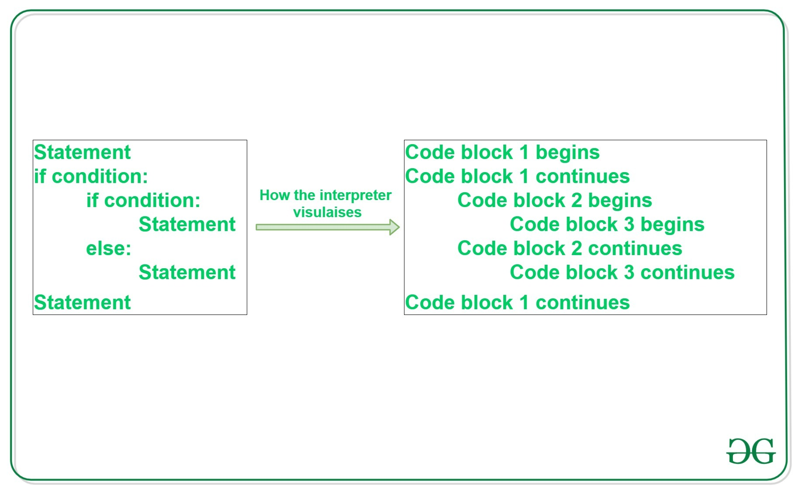

num = 37
if num > 100:
print('greater')
else:
print('not greater')
print('done')not greater
doneQuestions:
Objectives:
if, elif, and else branches.”and and or.”A key part of programming is making the computer do different things depending on the outcome of a test. This functionality is provided by the conditional statements if, elif, and else.
For this processes, and also for the for loops, Python relays on indentation. Indentation refers to the spaces at the beginning of a code line. Python uses indentation to indicate a block of code. This is a very importnat concept because without properly indenting Python may raise an IndentationError.

We can ask Python to take different actions, depending on a condition, with an if statement:
Output:
not greater
doneThe second line of this code uses the keyword if to tell Python that we want to make a choice. If the test that follows the if statement is true, the body of the if (i.e., the lines indented underneath it) are executed. If the test is false, the body of the else is executed instead. Only one or the other is ever executed.
Conditional statements don’t have to include an else. If there isn’t one, Python simply does nothing if the test is false:
num = 53
print('before conditional...')
if num > 100:
print(num,' is greater than 100')
print('...after conditional')before conditional...
...after conditionalOutput:
before conditional...
...after conditionalWe can also chain several tests together using elif, which is short for “else if”. The following Python code uses elif to print the sign of a number.
num = -3
if num > 0:
print(num, 'is positive')
elif num == 0:
print(num, 'is zero')
else:
print(num, 'is negative')-3 is negativeOutput:
"-3 is negative"Note that to test for equality we use a double equals sign == rather than a single equals sign = which is used to assign values.
We can also combine tests using and and or. and is only true if both parts are true:
at least one part is falseOutput:
at least one part is falseWhile or is true if at least one part is true:
Output:
at least one test is trueTrue and False: Examples
True and False are special words in Python called booleans, which represent truth values. A statement such as 1 < 0 returns the value False, while -1 < 0 returns the value True.
Consider this code:
Which of the following would be printed if you were to run this code? Why did you pick this answer?
C gets printed because the first two conditions, 4 > 5 and 4 == 5, are not true, but 4 < 5 is true.
True and False booleans are not the only values in Python that are true and false. In fact, any value can be used in an if or elif. After reading and running the code below, explain what the rule is for which values are considered true and which are considered false.
if '':
print('empty string is true')
if 'word':
print('word is true')
if []:
print('empty list is true')
if [1, 2, 3]:
print('non-empty list is true')
if 0:
print('zero is true')
if 1:
print('one is true')word is true
non-empty list is true
one is trueOutput:
word is true
non-empty list is true
one is trueSometimes it is useful to check whether some condition is not true. The Boolean operator not can do this explicitly. After reading and running the code below write some if statements that use not to test the rule that you formulated in the previous challenge.
if not '':
print('empty string is not true')
if not 'word':
print('word is not true')
if not not True:
print('not not True is true')empty string is not true
not not True is trueOutput:
empty string is not true
not not True is trueWrite some conditions that print True if the variable a is within 10% of the variable b and False otherwise.
Hint: You can make the condition easier to understand if you use the abs function — help will tell you what it does!
Keypoints:
if condition to start a conditional statement, elif condition to provide additional tests, and else to provide a default.”== to test for equality.”X and Y is only true if both X and Y are true.”X or Y is true if either X or Y, or both, are true.”True and False represent truth values.”